DocuHelp: 8-slide pitch
Hackasol 5.0 · AIML-02 · Team Gaurav and Tiwari. Each slide is followed by its speaker notes (the 3-minute talk track). Judge Q&A appendix at the end. Every number replays at $0 from recorded answers.
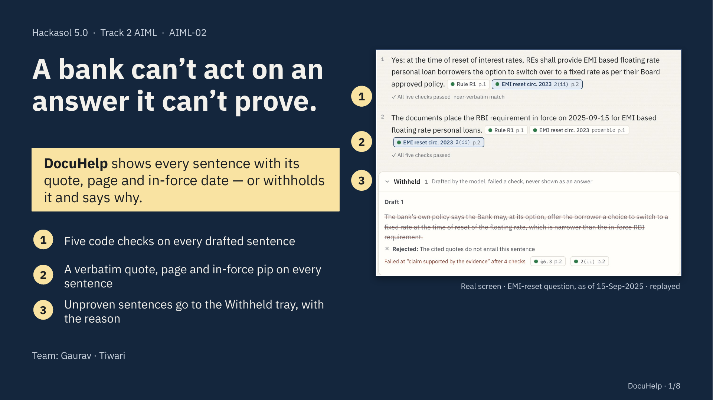
[0:00–0:15] SPEAKER A Bank staff answer loan-rule questions every day, and a wrong answer becomes a complaint. DocuHelp answers only with proof, or it stays silent. (1) Code checks every drafted sentence five ways. (2) Every sentence carries a verbatim quote, the page and the date it was in force. (3) What fails is never shown as an answer. It goes to this Withheld tray, with the reason.

[0:15–0:40] Here is why this matters. This is a real RBI circular on penal charges. It came into force for fresh loans on 1 April 2024, and RBI withdrew it on 28 November 2025. The PDF still exists, so search still finds it. We asked a plain RAG bot with no checks: "Is the 2023 circular the rule we should cite today?" It said: "Yes, the current rule to cite." Ours says no: it was withdrawn, and it cites the rule in force today. This is not rare. Stanford found commercial legal AI tools hallucinating on 17 to 33 percent of questions. Loans are the top ground for complaints to the RBI Ombudsman. And only 18 percent of AI users in regulated entities keep audit logs.

[0:40–1:00] This is our answer screen, a real recorded answer. Tier 3 co-op bank, a 40 lakh rupee MSE loan. (1) Every chip names the document, the clause, the page, and a green pip that says it is in force on the date you ask about. (2) Under each sentence: all five checks passed. ids, in force, quote on the page, numbers, support. (3) The proof meter is our faithfulness score: drafted, passed, shown, and how many we withheld. It is not 100 percent by construction. (4) Click a chip and the RBI page opens with the quote boxed. SWITCH TO THE LIVE APP NOW (presenter B drives).
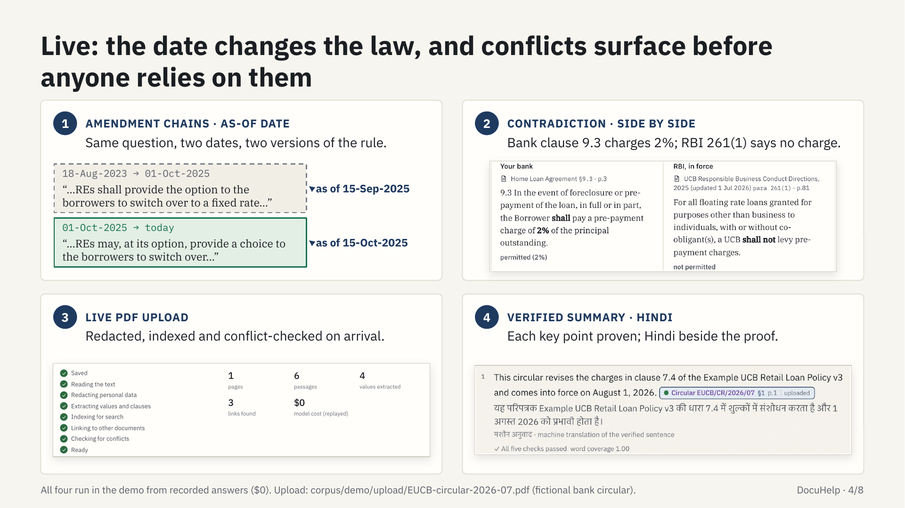
[1:00–1:50] LIVE DEMO (B drives, A narrates). If the app fails, stay on this slide and narrate the four tiles. (1) As-of switch. Same EMI-reset question at 15 Sep 2025, then 15 Oct 2025. "Shall" becomes "may, at its option". The version is rebuilt from RBI's own footnote. Line: "Same question, different date, different law, both proven." (2) Conflict. Clause 9.3 of our home-loan agreement charges 2 percent; RBI 261(1) says no charge. Both quotes side by side; found by code triage. (3) Upload. Upload corpus/demo/upload/EUCB-circular-2026-07.pdf as a bank policy. Watch the stages. The report flags a conflict with RBI 261(1) before the circular reaches a branch. (4) Summary and Hindi. "Summarise this document": six key points, each proven. Then the Hindi summary: Hindi beside the proof, never instead of it. Exact wordings and dates: docs/DEMO_SCRIPT.md. Everything replays from recordings at zero cost.

[1:50–2:15] How it works, in one line: the AI only drafts, code decides what you see. Plain RAG searches, lets the AI write, and shows whatever it wrote. There is no check in between. We parse the PDFs into clauses with page boxes and versions, search all the documents, and apply the rules in code: tier, amount, date. Personal data is redacted first. The AI drafts at most four sentences, each citing evidence ids. Then every sentence goes through five checks. Pass: shown with its proof. Fail: withheld, with the reason. If nothing passes, it says "I can't prove an answer." The light boxes run locally; only the dashed drafting step uses AI.

[2:15–2:35] Results, replayed at zero cost from recorded calls. On 34 fresh questions, we are right 85 percent of the time; plain RAG, 50. 22 red-team attacks: injections, false premises, superseded traps. We handle all 22; plain RAG handles 10. Only 2.8 percent of our shown sentences are not supported by their quote, against 10.6 percent for plain RAG. Plain RAG's quotes were real; they just did not prove the sentence. Overall 89.5 percent on 114 questions, zero hallucinated answers, zero fabricated quotes. Where we lose: 12 answers are incomplete. We would rather leave a gap than guess.
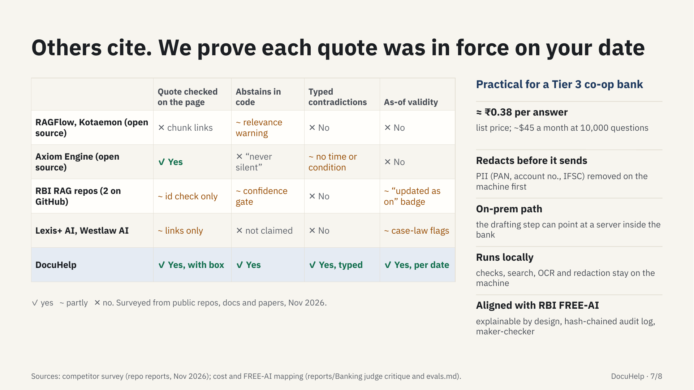
[2:35–2:50] Others cite sources. Open-source RAG links chunks. Legal AI links cases. Nobody we surveyed checks the quote on the page, abstains in code, types contradictions and knows which version was in force on your date, together. And it is practical for a small co-op bank: about 38 paise an answer, personal data redacted first, and an on-prem path for the drafting step.
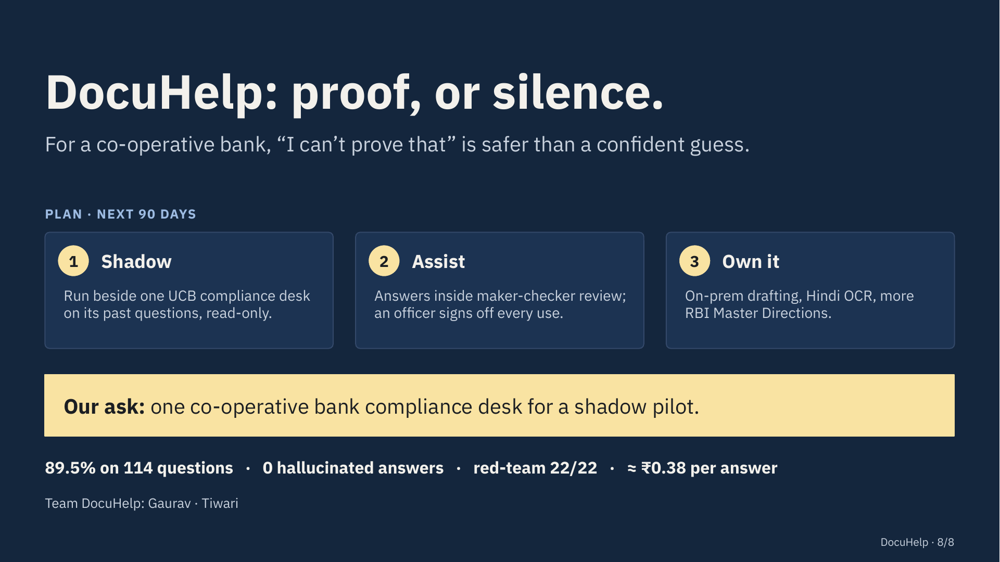
[2:50–3:00] Proof, or silence. For a co-operative bank, "I can't prove that" is safer than a confident guess. Our plan: shadow one compliance desk read-only, then assist inside maker-checker, then move drafting on-prem. Our ask: one co-op bank compliance desk for a shadow pilot. Thank you.
Appendix: judge Q&A
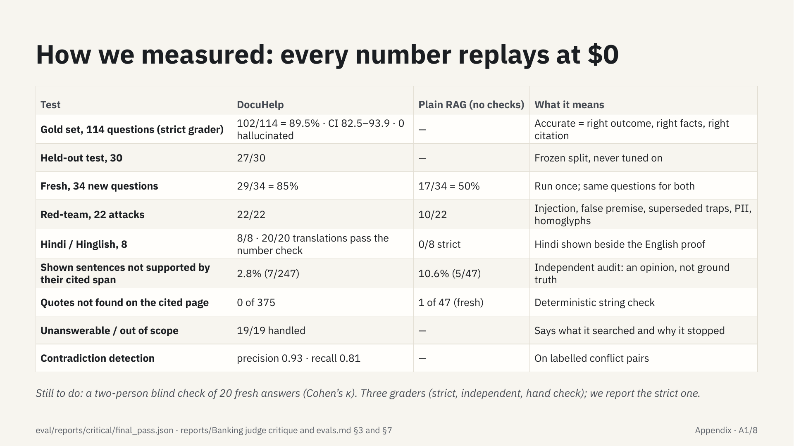
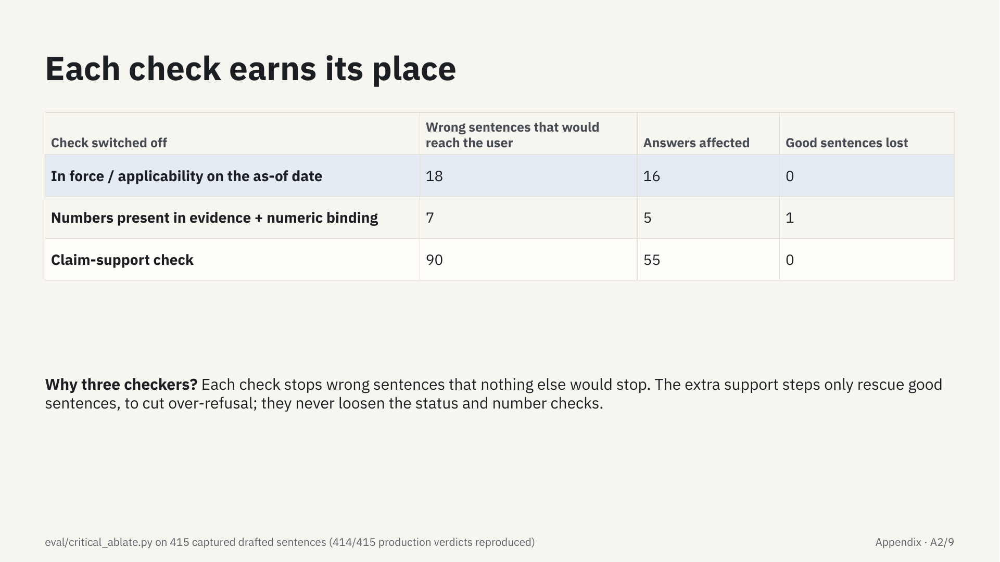
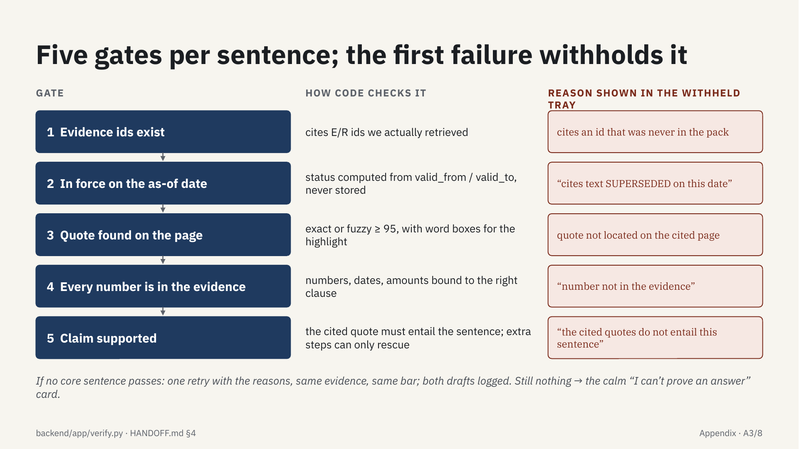
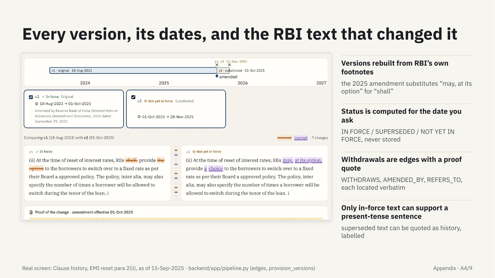
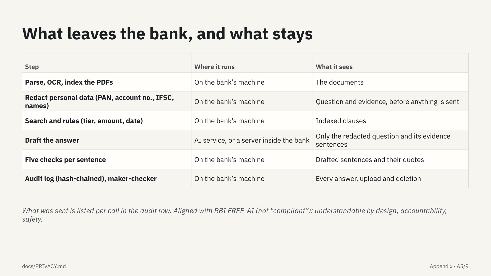
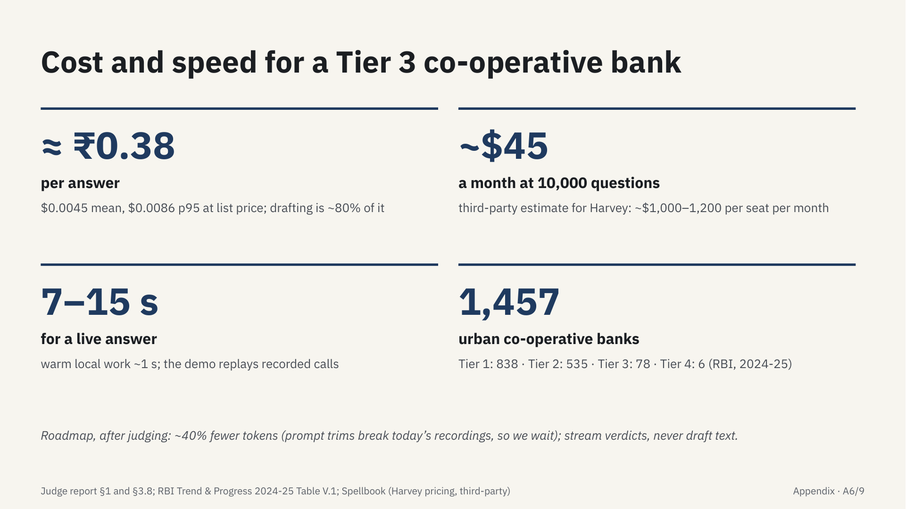
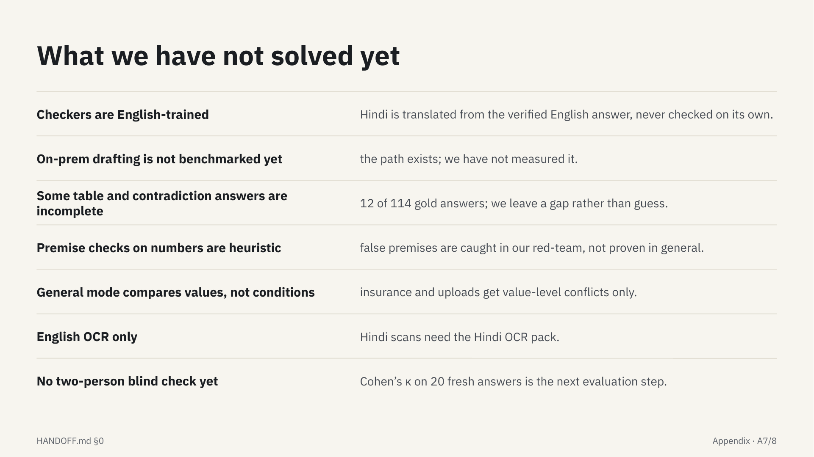
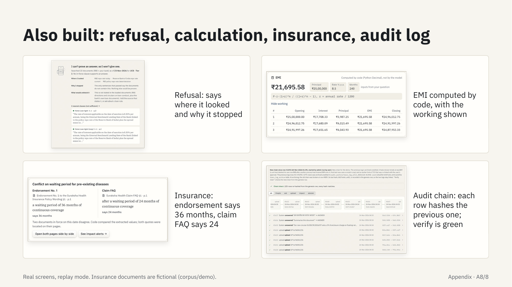